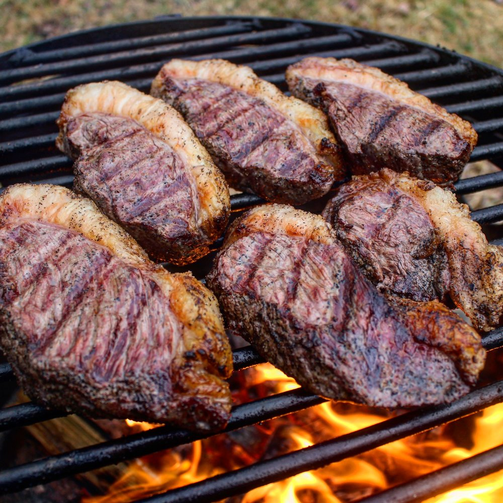
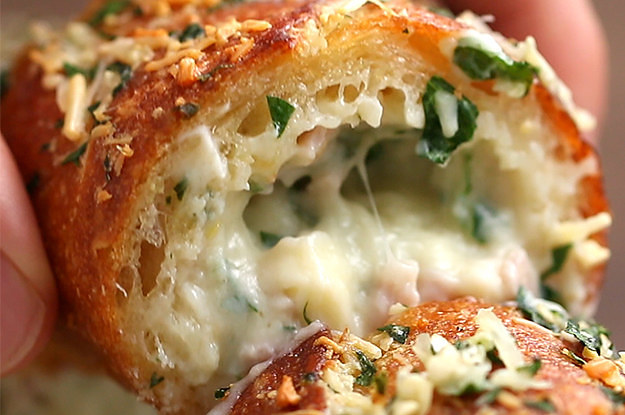
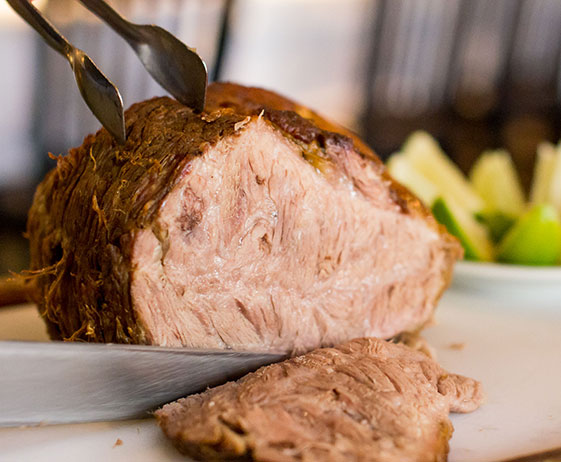
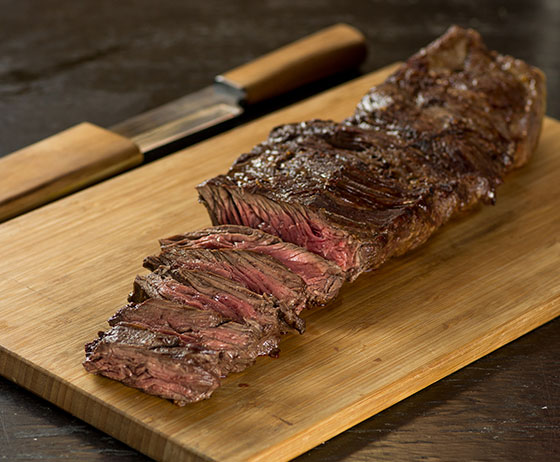
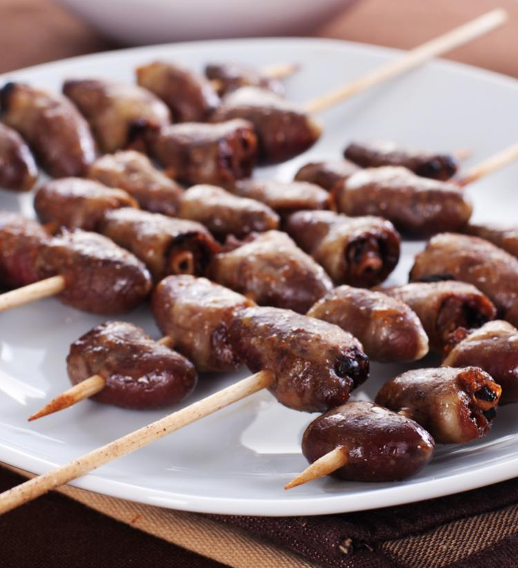
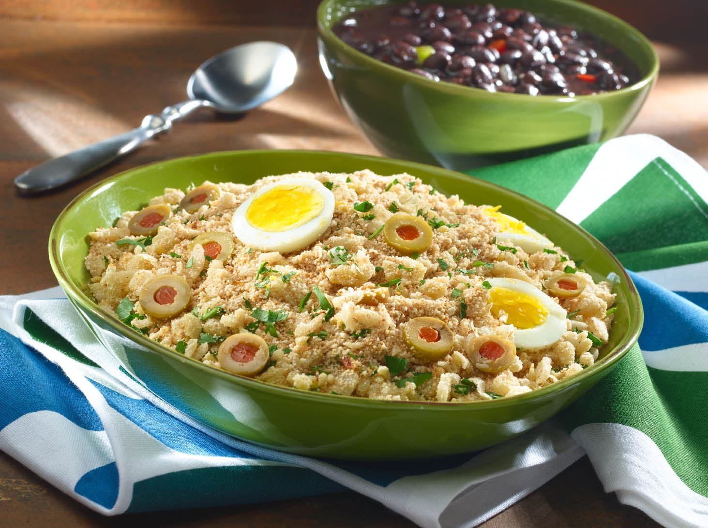

Food
Here are some of the most famous things you will find at a churrasco:
Picanha

The most well known cut of meat.
Very soft and with a distinct flavour.
Everyone's favourite
Pão de Alho (garlic bread)

Normally served as an entry, a bealtiful
combination of cheese, garlic, requeijão
(a brazilian cheese) and bread
Cupim

A cut of meat that is only present in certain breeds of kettle.
It has a high percentage of fat, making it go really well with lemon.
Can be served as a whole or just the crust that forms around it.
Linguiça
Form of smoke cured pork sausage seasoned with garlic and spices.
It is also really common to make a sandwich with it.
Fraldinha (Flank steak)

A cheaper cut of meat with a lot of flavour.
Usually cooked after marinating it, or just grilling it with coarse salt.
Coração (Chicken heart)

A type that doesn't please everyone, but who likes it,
loves
it.
Chicken hearts seasoed with salt and parsley, usually served in skillets.
Caipirinha
For thoese who are 18+ in Brazil (21 in the USA).
A delicious and refreshing drink made with Cachaça (Brazilian liquor), lemon, and sugar.
Recipe
Chicken wings
Seasoned with garlic, onion, lemon, pepper, salt, and parsley.
Farofa

Having the base ingredient yuca flour, it is a delicious side dish that has infinitely many possibilities to be seasoned with.
Variety ranges from banana to bacon, you can easily make yours unique.
Home
Utensils
Ambient
Tutorials